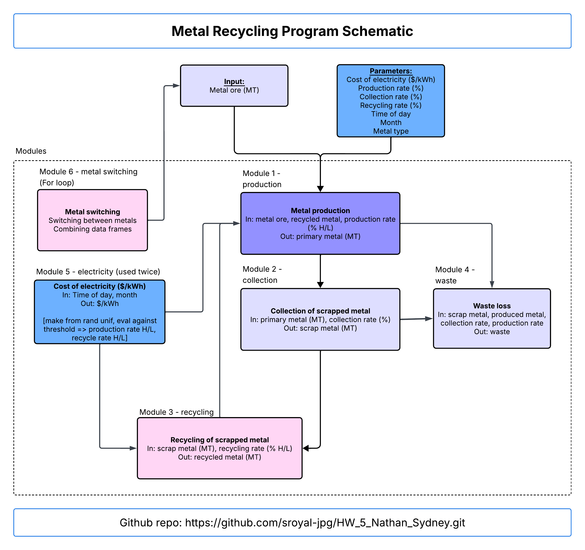

Show code
# clear the environment
rm(list = ls())Clear the environment
# clear the environment
rm(list = ls())Load packages: here, knitr
# load needed libraries
library(here)here() starts at /Users/nate/Documents/BREN/ESM262/Assignments/HW_5_Nathan_Sydneylibrary(knitr)knitr::include_graphics(here::here("program", "program_schematic.png"))
For electricity cost to influence the production and recycling rates, we created a random uniform distribution with electricity costs that then ranks them as high or low depending on the value of the output.
Range 10-30 cents/kWh (based on average electricity costs)
The function determines high vs low and reports that value and score
High = equal to or above 16 cents/kWh
Low = below 16 cents/kWh
source(here("modules/electricity_cost.R"))
# default is a random scenario, but can be changed
electricity_rates<- cost_of_electric(1,"Tuesday")
electricity_rates day month electricity_cost electricity
1 Tuesday 1 20.76363 high# this can be run for multiple days -- right now it's set to have the highest electricity costs during months, 6, 7, and 8 as well as during the weekdays.
## weekends have a 50% discount on electricityWeekend
#### THIS MODULE NEEDS TO RUN TWICE
cheap_electricity<- cost_of_electric(6,"Saturday")
electricity_rates <- cheap_electricityWeekday
expensive_electricity<- cost_of_electric(1,"Tuesday")
electricity_rates <- expensive_electricityWe created a data frame with initial metal, mass, collection rate, production, rate, and recycling rate data.
Production rate and recycling rate both use the output from the cost of electricity module.
# make a dataframe with metal ore information
metal <- c("steel", "aluminum", "copper")
metal_ore <- data.frame(
metal = metal,
mass = runif(length(metal), 1, 100),
# I chose random percentages for the collection rates
collection_rate = (c(0.95, 0.7, 0.5))
)
# production rate depends on electricity
metal_ore$production_rate <- ifelse(
electricity_rates$electricity == "high",
runif(length(metal), 0, 0.5),
runif(length(metal), 0.6, 1)
)
# recycling rate depends on electricity
metal_ore$recycling_rate <- ifelse(
electricity_rates$electricity == "high",
runif(length(metal), 0, 0.5),
runif(length(metal), 0.6, 1)
)
# return the ore information and the electricity rates for context
metal_ore metal mass collection_rate production_rate recycling_rate
1 steel 61.95984 0.95 0.3505881 0.2447764
2 aluminum 44.03906 0.70 0.3505881 0.2447764
3 copper 88.50106 0.50 0.3505881 0.2447764electricity_rates day month electricity_cost electricity
1 Tuesday 1 19.39105 highInitialize recycled metal so that metal production eventually knows what to add once it goes through the next iterations.
# initialize recyling value
recycled_metal<- 0From starting metal mass plus recycled metal, use production rate to calculate how much metal is produced.
# call the metal production module
source(here("modules/metal_production.R"))
## run it
produced_metal<- metal_production(metal_ore$mass,
recycled_metal,
metal_ore$production_rate)
data.frame(
metal= metal,
produced_metal
) metal produced_metal
1 steel 21.72238
2 aluminum 15.43957
3 copper 31.02742From produced metal, use collection rate to calculate how much scrap metal is collected.
# collection
source(here("modules/collection_scrap.R"))
## run it
collected_scrap<- collection_scrap(produced_metal,
metal_ore$collection_rate)
data.frame(
metal= metal,
collected_scrap
) metal collected_scrap
1 steel 20.63626
2 aluminum 10.80770
3 copper 15.51371From collected scrap metal, use recycling rate to calculate how much metal is recycled.
# recycling
source(here("modules/scrap_recycling.R"))
## run it
recycled_metal <- scrap_recycling(collected_scrap,
metal_ore$recycling_rate)
data.frame(
metal = metal,
recycled_metal
) metal recycled_metal
1 steel 5.051271
2 aluminum 2.645470
3 copper 3.797390From the remaining produced metal not collected and collected scrap not recycled, use collection rate and recycling rate to calculate how much metal and ore waste is generated.
# waste
source(here("modules/waste_loss.R"))
## run it
waste <- waste_loss(produced_metal,
metal_ore$collection_rate,
recycled_metal,
metal_ore$recycling_rate,
metal_ore$mass)
data.frame(
metal = metal,
waste
) metal waste
1 steel 45.13842
2 aluminum 35.22929
3 copper 75.85523Run each module for each metal and combine the results with the original data frame.
# metal switching
source(here("modules/metal_switching.R"))